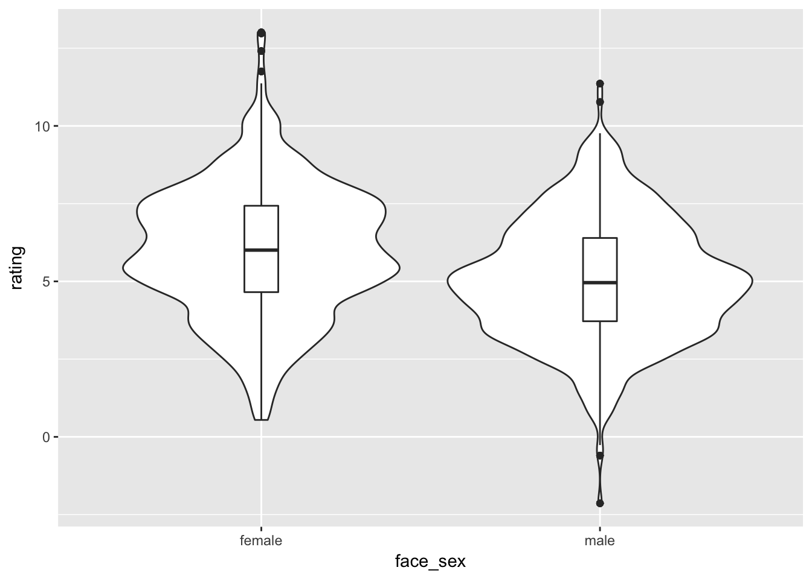

Download the Rmd notebook for this example
How you choose to code categorical variables changes how you can interpret the intercept and effects of those variables. My favourite tutorial on coding schemes explains things in detail. I’m just adding some concrete examples below.
First, I simulated a data frame of 100 raters rating 100 faces each. Male faces get ratings with a mean of 5 and SD = 2; female faces get ratings with a mean of 6 and SD = 2. (I know, ratings are usually ordinal integers, but let’s pretend we used something like a slider.)
suppressMessages( library(tidyverse) )
set.seed(444) # for reproducibility; delete when running simulations
df <- data.frame(
face_id = rep(1:100, each=100),
rater_id = rep(1:100, times=100),
face_sex = rep(c("male", "female"), each=500),
rating = c(rnorm(500, 5, 2), rnorm(500, 6, 2))
)Calculate the mean and SD to confirm the simulated data.
df %>% group_by(face_sex) %>% summarise(mean = mean(rating), sd = sd(rating))## # A tibble: 2 x 3
## face_sex mean sd
## <fctr> <dbl> <dbl>
## 1 female 5.974585 2.098027
## 2 male 5.042843 1.944579And always graph your data!
df %>%
ggplot(aes(face_sex, rating)) +
geom_violin() +
geom_boxplot(width=0.1)
Recode face sex using treatment, sum, or effect coding.
df2 <- df %>%
mutate(
face_sex.tr = recode(face_sex, "female" = 0, "male" = 1),
face_sex.sum = recode(face_sex, "female" = -1, "male" = 1),
face_sex.e = recode(face_sex, "female" = -0.5, "male" = 0.5)
)Now we analyse the data using each of the 4 styles of coding. I’m just going to show the table of fixed effects.
suppressMessages( library(lmerTest) )
m1 <- lmer(rating ~ face_sex + (1 | face_id) + (1 + face_sex | rater_id), df2)
sum1 <- summary(m1)
sum1$coefficients## Estimate Std. Error df t value Pr(>|t|)
## (Intercept) 5.9745855 0.09215043 99.00217 64.83513 0.000000e+00
## face_sexmale -0.9317424 0.12462646 99.00316 -7.47628 3.119638e-11Note that the intercept coefficient is equal to the female mean and the “effect” of face sex is how much less the male mean is.
m.tr <- lmer(rating ~ face_sex.tr + (1 | face_id) + (1 + face_sex.tr | rater_id), df2)
sum.tr <- summary(m.tr)
sum.tr$coefficients## Estimate Std. Error df t value Pr(>|t|)
## (Intercept) 5.9745855 0.09215043 99.00217 64.83513 0.000000e+00
## face_sex.tr -0.9317424 0.12462646 99.00316 -7.47628 3.119638e-11Treatment coding is the same as categorical coding, but gives you more control over what the reference category is.
m.sum <- lmer(rating ~ face_sex.sum + (1 | face_id) + (1 + face_sex.sum | rater_id), df2)
sum.sum <- summary(m.sum)
sum.sum$coefficients## Estimate Std. Error df t value Pr(>|t|)
## (Intercept) 5.5087143 0.06010875 99.00036 91.645794 0.000000e+00
## face_sex.sum -0.4658712 0.06231330 99.00003 -7.476272 3.120215e-11With sum coding, the intercept coefficient is equal to the overall mean (ignoring face sex) and the “effect” of face sex is how much above and below that each of the two face sexes differ from the mean.
m.e <- lmer(rating ~ face_sex.e + (1 | face_id) + (1 + face_sex.e | rater_id), df2)
sum.e <- summary(m.e)
sum.e$coefficients## Estimate Std. Error df t value Pr(>|t|)
## (Intercept) 5.5087143 0.06010875 99.00016 91.645799 0.000000e+00
## face_sex.e -0.9317424 0.12462665 99.00064 -7.476269 3.120171e-11With effect coding, the intercept coefficient is the same as sum coding and the “effect” of face sex is how much the two face sexes differ from each other. Note that this coefficient is double that from the sum coding.